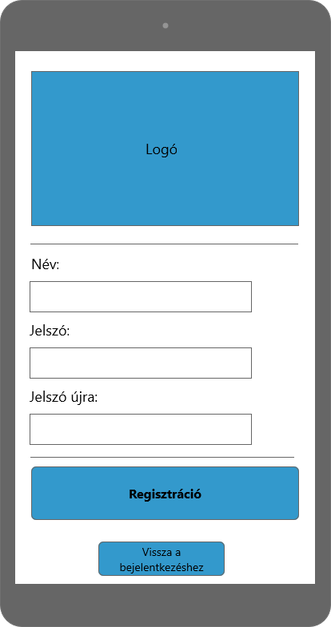

A megrendelő szeretné kibővíteni az általa nyújtott oktatási szolgáltatások elérhetőségét, hogy versenytársaihoz képest így jusson piaci előnyökhöz.
Egy új rendszer előállítását rendelte meg, amely interneten keresztül modern megoldásokat használva működik.
A rendszer segítséget nyújt azok számára, akik valamilyen módon szeretnék tudásukat elmélyíteni egy adott területen, vagy új
ismereteket szeretnének szerezni.
A XXI. század megköveteli, hogy mindez hálózaton is elérhető legyen, ennek megfelelően Android alkalmazást és weboldalt is a megrendelő rendelkezésére kell bocsátani.
Eddig a megrendelő csak számítógépen való gyors írás elsajátításához használt egy Stamina nevű alkalmazást.
Ez a fajta tanulás megtetszett a diákoknak, és a tanárok is felismerték, hogy egy játékos oktatóprogrammal eredményesebbé, szórakoztatóbbá tehetik az oktatást,
mint a hagyományos, táblára írásos módszerrel.
Ezért elkezdtek keresni számukra megfelelő, létező programokat. Találtak többet is (pl.:Kahoot), viszont ezek nem tetszettek nekik.
Egy olyan programra lenne szükségük, amellyel a diákok önnálóan tudnak feladatot megoldani, és a többi játékos pontszámához képest tudják viszonyítani magukat.
Mindezek mellet a megrendelőnek szüksége van a saját logojuk feltüntetésére is.
Ezen okokból kifolyólag megkértek minket, hogy csináljuk meg nekik a vágyott alkalmazást, ami sokkal könnyebbé teheti számukra az oktatást.
| Modul | ID | Név | v. | Kifejtés |
|---|---|---|---|---|
| Kompatibilitás | K1 | Webböngésző kompatibilitás | 1.0 |
A szoftver futtatásához szükséges webböngésző minimális verziószáma: - Firefox 63.0 - Google Chrome 70.0.3538 - Opera 55 - Safari 12.0.1 |
| Kompatibilitás | K2 | Android kompatibilitás | 1.0 | Az applikáció futtatásához szükséges minimális Android verzió: Android 5.0 Lollipop (21. API szint) |
| Jogosultság | K3 | Bejelentkezési felület | 1.0 |
A felhasználó az email címe és a jelszava segítségével bejelentkezhet. Ha a megadott email cím vagy jelszó nem megfelelő, akkor a felhasználó hibaüzenetet kap. |
| Jogosultság | K4 | Regisztráció | 1.0 |
A felhasználó a felhasználói nevének, email címének és jelszavának megadásával regisztrálja magát. A jelszó tárolása kódolva történik az adatbázisban. Ha valamelyik adat ezek közül hiányzik vagy nem felel meg a követelményeknek, akkor a rendszer értesíti erről a felhasználót. |
| Jogosultság | K5 | Jogosultsági szintek | 1.0 |
- Admin : új feladat feltöltése - Felhasználó : feladatok kitöltése, toplista megtekintése, jelszó módosítása - Vendég : regisztráció, belépés |
| Modifikáció | K6 | Jelszó módosítása | 1.0 | A felhasználó módosítani tudja saját jelszavát. Ehhez szükséges a régi és az új jelszavának megadása, valamint az új megerősítése. |
| Feladattípus | K7 | Kvíz | 1.0 | Több kérdésből áll, a feladat a helyes válasz kiválasztása több lehetőség közül. A felhasználó az eltelt idő függvényében pontot kap. |
| Statisztika | K8 | Toplista | 1.0 | Egy lista a játékosok pontszámairól, a lista elején a legtöbb pontot elért felhasználó található. |
| Jogosultság | K9 | Admin felület | 1.0 | Felület az admin fiókkal rendelkező felhasználó számára. Tartalmaz egy felületet az új feladatok feltöltéséhez. |
Login felület képernyőterve androidon.

Regisztrációs felület képernyőterve androidon.
Bejelentkezett felület képernyőterve androidon.

Regisztrációs felület weben.

Bejelentkező felület weben.

Adatbázis modell terve

A játékos oktatás projekthez / rendszerhez a különböző felhasználok / személyek más-más fajta módon fognak interaktiválni. A használati esetek feladata, hogy leírja a különböző felhasználok
vagy "szereplők" hogyan fognak a rendszerhez viszonyulni, hogyan fogják használni, és mihez is fognak majd hozzáférni.
Már megvannak adva a különböző felhasználói szerepkörök és, hogy milyen dolgokhoz milyen hozzáféréseik vannak. Ezek alapján kell megírni a használati eseteket.
Fontos, hogy egy felhasználó tartozhat több szerepkörhöz is. Lehet, hogy egy TANÁR SZÜLŐ is, esetleg ADMIN is.
Lényeges, hogy a DIÁK szerepkör felhasználói nem lehetnek egyik másik szerepkörben sem.
Négy felhasználói szerepköreink vannak: ADMIN, DIÁK, TANÁR, és SZÜLŐ. Itt lekell írni, hogy milyen fajta módon, hogyan fogják használni a rendszert.
Fontos, hogy a különböző rendszer használatokhoz csak az férjen hozzá akinek hozzá kell férnie. Azt nem szabad megengedni, hogy egy Szülő akinek a legminimálisabb a interaktivitása a
rendszerrel az Admin jogosultságokat kapjon, ez fordítva is igaz.
Ha egy felhasználó több szerepkörhöz tartozik, akkor ki kell lépné-e a jelenlegi szerepköréböl és átjelentkezni a másikba.
A felhasználó bejelentkezés után választhat szerepkörök közül.
[web-service]:különböző programnyelveken írt és különböző platformokon futó szoftveralkalmazások interneten keresztül történő adatcseréjére használt vebszolgáltatások.
[multiplatform]: több környezetben futtatható alkalmazás
[main menu]: A fő menü, amely a weboldal indulásakor megjelenik
[final menu]: A játék végén megjelenő panel, amely a statisztikát mutatja
[bug]: fejlesztési hiba ami által a program nem a várt eredményt hozza
[main menu]: A fő menü, amely a weboldal/program indulásakor megjelenik
[gameboard]: Játék közben, a különböző elemeket tartalmazó felület
[backend]: A kiszolgáló, ahonnan az alkalmazást el lehet érni
[frontend]: egy réteg ami feladata a rendszerből kijutó adatok prezentálása, illetve a bejövő adatok fogadása